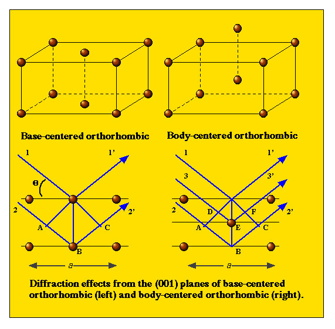

Crystal structure may be defined as the orderly arrangement of
atoms in three dimensional space. Included then, in the definition
is information on
How does one go about determining this information?
One cannot rely on the concept of inverse theory. This is a
branch of science that works on the premise that you know exactly
how to mathematically model physical phenomena. The observed data
are then used to solve for the physical parameters that describe
the system. This approach unfortunately does not work when using
XRD data and the solving for the locations atoms within a unit
cell. We must therefore resort to a trial-and-error method or
forward modeling. When forward modelling, one assumes a certain
model solution is correct, and then tests to see how well the
model result matches the observations. Because there are many
potential solutions to a problem, optimization theory* is often
employed to best-fit the model to the observed. If the model
result fits reasonably well, then the solution is assumed to be
correct. The "goodness of fit" between observe data and model
solutions is used as a criteria to determine if a solution is
acceptable.
Diffraction patterns
Can we calculate the theoretical X-ray diffraction pattern of a crystal structure?
What determines the possible directions (i.e., possible
angles) in which a crystal can diffract a beam of monochromatic
radiation?
Recall that diffraction can come from any number of (hkl) planes. Therefore, one needs an expression that will predict the diffraction angle for any set of (hkl) planes.
Starting with Bragg's Law:
There also exists geometric equations for each crystal system that relate the d-spacing of any given (hkl) plane and the lattice parameters.
For the Isometric system:
Let's work an example for halite.
a = 5.639Å.
If (hkl) = (111), then a2 = 31.8 Å2 and (h 2+k 2+l 2) = 3.
1 / d2111 = 0.0943 or d111 = 3.26 Å
Bragg's law and the equation above can be combined to give:
For a particular wavelength of monochromatic radiation (e.g., CuK α = 1.54059Å or CoK α = 1.7890Å) and a particular crystal in the isometric system with a unit cell of length a (e.g. 5Å), then all possible Bragg angles of diffraction can be determined for every possible (hkl) plane.
Note that λ 2 / 4 a 2 (e.g., 0.0237 using the values CuKα = 1.54059Å and a = 5Å) is always constant for any one diffraction pattern.
Also note that (h 2 + k 2 + l 2) will always be an integral value and certain combinations are not possible (i.e., ≠ 7, 15, 23, 28, ...).
For all possible families of planes hkl in a unit cell, it is possible to calculate the angle at which reflection would occur.
Example: Using CuKα = 1.54059Å
|
|
|
|
|
|
|
|
|
|
|
|
|
|
|
|
|
|
|
|
|
|
|
|
|
|
|
|
|
|
|
|
|
|
|
In short, this tells us that diffraction directions are
determined solely by the shape and size of the unit cell.
Atomic Locations - Space Group effects
There are particular atom arrangements that reduce the intensity
to zero.

The presence or absence of certain index lines is therefore
related to the Bravais lattice type.
The directions of diffracted beams (i.e., the location of
(hkl) reflections) can only tell use about the size and
shape of the unit cell. We need intensity information to tell us
about the location of atoms within the unit cell.
Atom Types - Atomic Scattering Factors
The intensity of scattered X-rays is related to the number of electrons in the atom. Scattering efficiency is directly proportional the number of electrons if the scattering is parallel to incident beams (2Θ = 0°). This relationship gets more complicated as angles of 2Θ become higher. As a general rule, Fe2+ (24e-) will scatter more than Si4+ (10e-), which scatters similarly to O2- (10e-) at 0°. At higher angles Si4+ scatters more than O2-
There are other scattering factors, however the important
relationship to remember is...
Crystal Structure Diffraction Pattern
Three steps to determination of an unknown structure ---> the
lattice parameters and atom positions.
{kind=link}
{kind=link}